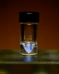

actinium

Definition: Actinium is a chemical element with the symbol Ac and atomic number 89. It was first isolated by Friedrich Oskar Giesel in 1902, who gave it the name emanium; the element got its name by being wrongly identified with a substance André-Louis Debierne found in 1899 and called actinium. Actinium gave the name to the actinide series, a set of 15 elements between actinium and lawrencium in the periodic table. Together with polonium, radium, and radon, actinium was one of the first non-primordial radioactive elements to be isolated.
Source: Wikipedia
Wikipedia Page
Wikidata Page